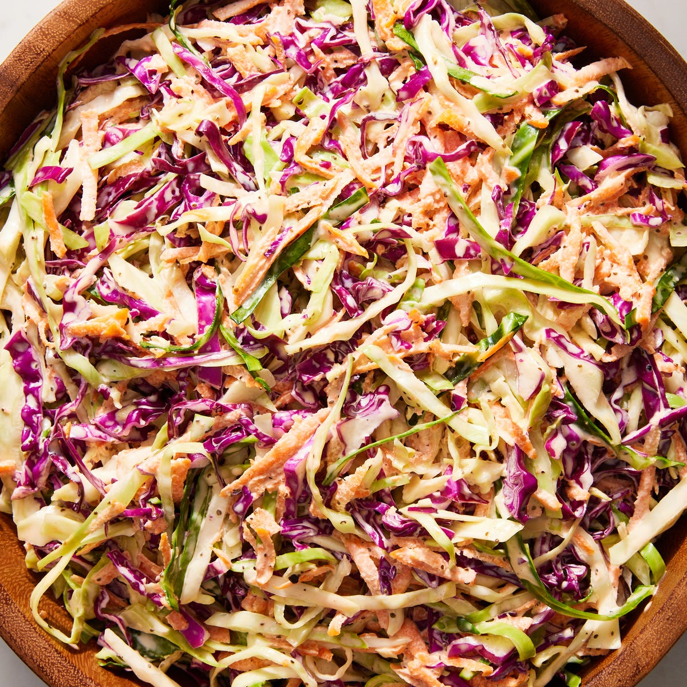

Coleslaw

Description
A classic, staple side dish, coleslaw is a must for summer BBQs, potlucks, and picnics. Everyone needs a go-to recipe, and I happen to think this is the one you should reach for. With its mix of purple and green cabbage, it's a winner on looks alone. But the kicker is the dressing, which is lighter and punchier than other coleslaw dressings thanks to a generous amount of apple cider vinegar and Dijon mustard. Whether you're hungry for a last-minute side dish or the perfect topping to your meal (we're looking at you, chicken burgers), this coleslaw recipe has you covered.
Ingredients
- 1 cup mayonnaise
- 1/4 cup apple cider vinegar
- 1 Tbsp. Dijon mustard
- 2 tsp. celery seed
- 2 tsp. granulated sugar
- Kosher salt
- Freshly ground black pepper
- 1/2 small head green cabbage, thinly sliced
- 1/2 small head red cabbage, thinly sliced
- 3 large carrots, grated on the large holes of a box grater
Steps
- In a large bowl, whisk mayonnaise, vinegar, mustard, celery seed, and granulated sugar to combine; season with salt and pepper.
- Add green cabbage, red cabbage, and carrots and toss to combine.
- Cover bowl with plastic wrap and refrigerate until ready to serve.
Home